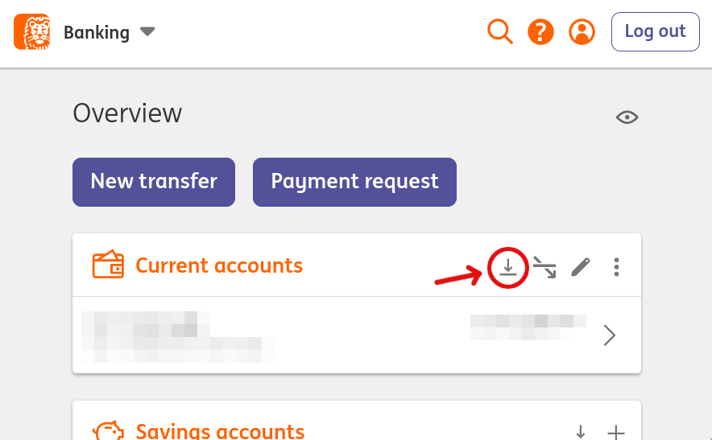

CashPlot
Take control of your financials.
Data
First step is to get the raw data. Your bank usually provides a way to download all the transactions you've made in a certain format, such as CSV. This is where you enter that data. ING Bank .csv files are supported. See the FAQ for how to download these from the ING Bank portal.If you've already used CashPlot before, you can transfer results from/to another device. That way you can skip the next few pages.
Accounts
Provide a list of (bank) accounts you want to track. The first account is always the one for which you gave transaction data. Other accounts may be savings accounts, retirement accounts, et cetera. Enable the check mark if the balance of an account should add to your "net worth".Categories
In order to make sense of the kinds of things you're spending/earning on, it's possible to group transactions into categories. These categories will later be summed up to get a total amount spent/earned for a certain period. CashPlot isn't able to tell when a transaction occurs between the main and savings accounts. For that to work, you have to group these transactions into a category with the same name as the savings account.Balance
Totals
Frequently Asked Questions
How do I get transaction files from my bank?
If you use ING Bank, go to the ING Bank Portal (for example https://mijn.ing.nl/). Log in and press the download icon as shown here.  This will open up a dialog. If you have multiple checking accounts, select the one you want to use. Select the earliest start date possible (usually January 1st of 9 years ago). Leave the rest as-is. All CSV types are supported. Both English and Dutch languages are supported as well. Hit the Download button and you should have a transaction file in your downloads folder.
Can you add support for my bank?
Yes, I would gladly do that. See the Github project for more info.
I have some ideas on how to improve CashPlot. Where can I share this?
Awesome, please do. See the Github project for more info.
Why is there no Privacy Policy?
CashPlot stores everything locally in the browser. I (the author) don't record any data, not even website access logs. It's none of my business.